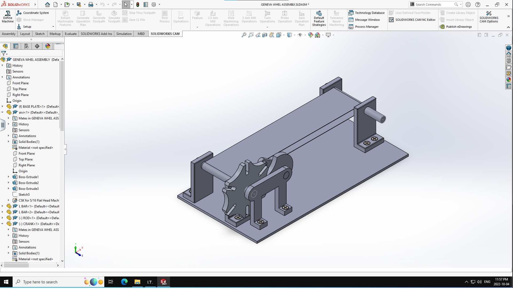
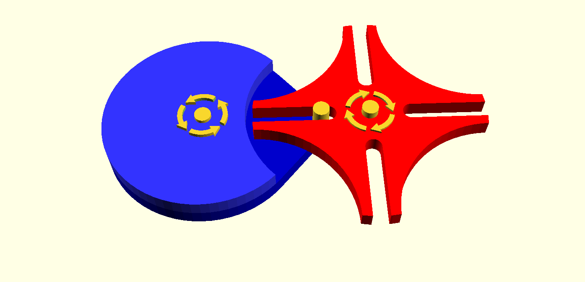
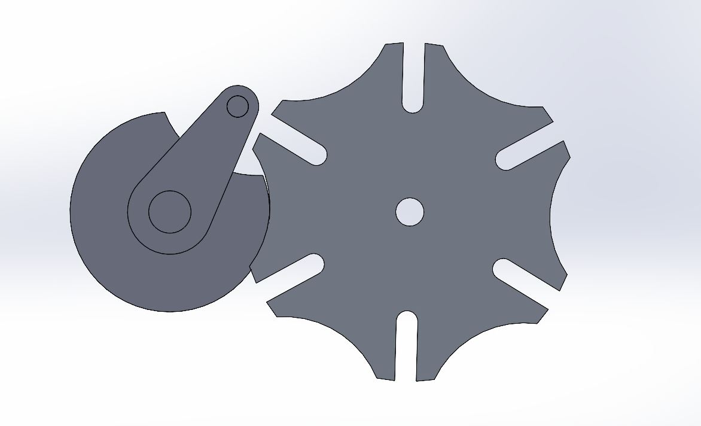

The aim of this project, done as a part of coursework, was to build a purely mechanical system to gain experience with the following:
CAD - Design, model, and assembly including the selection of fasteners, shafts/bearings, materials
CAM - Select stock metal, appropriate tools, generation of toolpaths and CNC machining programs using MasterCAM, setup of the workpiece, operating a 3-axis HAAS CNC milling machine
Manufacturing Processes - Milling, Lathe
Common Machine Shop Skills (Band Saw, Hack Saw, manual Lathe, Drill Press, Hand and Power tools
Fabrication - Physically assemble the components using hand tools, eliminate sharp edges
Project Management - Source materials, revise design to use available stock, plan the design/manufacturing activities to ensure that components are ready when needed
Pictures/Video:

Fig. 1 - Simplified assembly 
Fig. 2 - Working of Geneva Mechanism 
Fig. 3 - Close up of actual mechanism